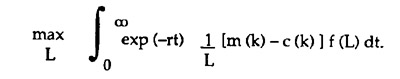
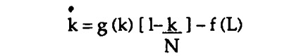

|
Johnny Latham was the sheriff of Mad Dog, Texas. Johnny had a problem. The boys over at the mayor's office provided him with an allowance according to the number of bona fide criminals he arrested. With this allowance he paid his expenses and kept whatever was left as salary. The way the mayor saw it, if there weren't any criminals, there was no sense in wasting money on law enforcement. Johnny was sitting on the courthouse steps sunning himself. He rubbed the stubble on his chin, pushed back his hat, and reflected. If you just leave it be, the criminal element breeds like flies. Pretty soon there would be thieves, vagabonds, no-goods, and hell-raisers all over Mad Dog. Why then he could just mosey down the street and pluck 'em off the corners for a fast buck, just like taking whiskey from a Baptist. No. The mayor wouldn't like it. Johnny knew that a crime wave would induce the mayor to cut back on the bounty per criminal. First because the budget couldn't take it, and second because he would become increasingly reluctant to shell out good money to a no-good sheriff. Then there was the matter of deputies. Hiring deputies was one way to keep the jails full. But more deputies meant more ways to split the profits. Also, as crime dried up, criminals would be more costly to apprehend. In the course of Johnny's meditations a wandering minstrel-economist, possessed of a guitar and a merry countenance, came up the street. "Hey there, feller, what brings you to Mad Dog?" Johnny demanded. "I'm a wandering minstrel-economist," said the wandering minstrel-economist. Whereupon Johnny explained his difficult problem. "I'll solve your problem for you," the minstrel-economist said, "but first I'll sing you a little song." "Never mind," said Johnny. "What you've got is a capital resource management problem," the minstrel-economist said. He began to scribble with a pencil on the concrete steps. Johnny got m(k) dollars per criminal. This amount increased with the number of criminals, k, but at a decreasing rate, because of the mayor's reaction to the growth of crime. From m(k) he had to subtract costs per criminal, c(k). Costs increased as the number of criminals dropped, because it became increasingly hard to find and catch them. The number of criminals caught was a function, f(L), of the number of lawmen, L. Thus Johnny would maximize the discounted present value of the future profits per lawman:
 Johnny looked at the equation in admiration. "Now, for the next part, think of a fishery," the minstrel-economist said. "A fishery?" "Sure. Just think of Mad Dog as a holding tank for potential criminals." "Now in a fishery," the minstrel-economist continued, "if the number of fish gets too large for the environment, the fish eat all the food and die out. On the other hand, if the number gets too small, well, your cost of catching them goes up. So we have to figure out just the right fishing rate to keep things as lucrative as possible." Ain't that the truth, Johnny thought to himself. He had always figgered that organized crime and organized crime-fighting were two parts of the same dynamic feedback process, but he had never seen it spelled out quite so clearly before. Since crime breeds crime, the growth of criminals, g(k), was a function of the number of criminals. They figured that the environmental carrying-capacity for criminals in Mad Dog was N, since that was the population. As the number of criminals k approached N, the growth in crime would slow, since no-goods would squabble among themselves and thieves would find fewer things to rip-off. So Johnny's state equation looked like this:
 The minstrel-economist scribbled some more, eventually writing down optimal control and response equations.(*) "Note," the minstrel-economist said, "that in equilibrium the discount rate r equals the marginal productivity of criminals, adjusted by a second term. The second term represents the marginal change in profit from an additional criminal, expressed as a percentage of the current-value shadow price of criminals." "You've got me there," Johnny said. The minstrel-economist then proceeded to integrate the equations to obtain the optimal number of lawmen and the optimal number of criminals as a function of time, which, Johnny explained, only flowed six days a week in Mad Dog, because everyone liked to take Sundays off. "I'll be darned," Johnny said with a sense of satisfaction. He was still looking at the figures when the wandering minstrel-economist disappeared into the sunset. The latter was no small feat, as it was only two o'clock in the afternoon. Back in the office Johnny unlocked the cash box, took out a roll of bills, and stuffed them in his pocket. He went out and climbed into his Ranchero pickup. He headed down Main Street toward the local cafe. He was ready to hire hisself some deputies. This story first appeared in Liberty in May 1992. (*) Maximizing the Hamiltonian and solving for dL/dt, we obtain dL/dt = [A+B+C+D]/E, where A = -(1/L)[m'(k)-c'(k)] f(L) B = -[1/L-f(L)/(f '(L)*L2)] [m(k)-c(k)] [g'(k)(1-k/N)-g(k)/N] C = r [1/L-f(L)/(f '(L)*L2)] [m(k)-c(k)] D = (dk/dt) [1/L-f(L)/(f '(L)*L2)] [m'(k)-c'(k)] E = [m(k)-c(k)]{ [f(L)/(f '(L)*L2] [f ''(L)*L2+2 L f '(L)] - 2/L2}. In equilibrium, with dL/dt = dk/dt = 0, we have for the discount rate r, r = [g'(k)(1-k/N)-g(k)/N] + F/G, where F = (1/L) [m'(k)-c'(k)] f(L) G = [1/L-f(L)/(f '(L)*L2)] [m(k)-c(k)] . Here the expression for G is the current-value shadow price of criminals. For the mathematics involved, see the following works: Richard Bellman, Adaptive Control Proccesses, Princeton University Press, 1961. Arthur E. Bryson, Jr., & Yu-Chi Ho, Applied Optimal Control, Hemisphere Publishing Company, Washington D.C., 1975. Colin W. Clark, Mathematical Bioeconomics: The Optimal Management of Renewable Resources, John Wiley & Sons, New York, 1976. J. Orlin Grabbe's web page is located at http://www.aci.net/kalliste/homepage.html.
|